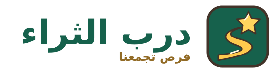
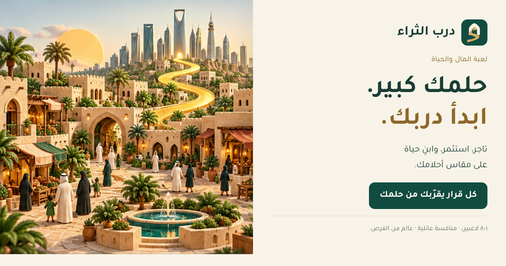

درب الثراء
هوية لعبة المال والحياة
كل قرار يقرّبك من حلمك.
لعبة عربية تجمع دفء الحي وحماس المنافسة. الدرب الذهبي يرمز إلى التقدّم، والبوابة إلى الحرية المالية؛ مع ألوان هادئة تجعل الأرقام والقرارات في المقدّمة.
٠١ · الشعار

اترك مساحة آمنة حول الشعار لا تقل عن ربع عرض الرمز. الحد الأدنى للرمز ٢٤ بكسل، وللتوقيع الأفقي ٢٢٠ بكسل. استخدم رمزاً منفرداً للأحجام الصغيرة. لا تمدّد الشعار ولا تغيّر ترتيب عناصره.


٠٢ · الألوان
#124C40#D5AC60#F8F3E8#183E35#B9684F#216944الزمرد للأزرار الأساسية والهوية، والعاجي لمساحات القراءة، والذهبي للتقدّم والإنجاز. استخدم #8D6829 للنص الذهبي على العاجي؛ الذهبي الفاتح عنصر زخرفي. استخدم الأخضر والأحمر مع كلمات أو رموز توضح المعنى، ولا تعتمد على اللون وحده.
٠٣ · الخط والصوت
حلمك كبير. ابدأ دربك.
تاجر، استثمر، وابنِ حياة على مقاس أحلامك.
١٢٣٤٥٦٧٨٩٠ · 1234567890خط Tajawal بوزنين ٤٠٠ و٧٠٠، محفوظ محلياً للعمل دون اتصال. العنوان ٤٠–٦٤ بكسل، عنوان القسم ٢٤–٣٢، والنص ١٦–١٨. اكتب بلغة عربية مباشرة ودافئة، وابدأ الأزرار بالفعل: ابدأ، اشترِ، استثمر، انضمّ.
ترخيص الخط المفتوح SIL OFL٠٤ · الشخصيات
١٤ شخصية للمهن داخل اللعبة، مع شخصيتين إضافيتين في اللوحة الأصلية. أسلوب مجسّم ناعم، ملامح عربية ودودة، وأدوات توضّح المهنة. الخلفية العاجية والملابس الزمردية تربط الجميع بعالم اللعبة.


٠٥ · بضائع السوق


حواف واضحة وتفاصيل دافئة تساعد على التعرّف على البضائع حتى داخل خلايا السوق الصغيرة. تبقى أسماء البضائع ظاهرة بجانب الرسوم.
تحميل لوحة البضائع الأصلية٠٦ · عالم اللعبة
٠٧ · أيقونات الواجهة
dicepersonpeopleshopledgerglobearrowcoincaseleafreceiptheartstarhomeshieldbookgiftchartbankpackagebulbbellcoffeebuildingplanehealthscalesmileflagdownloadmenurobot٣٢ أيقونة متجهية بحدود مستديرة وسماكة موحّدة. استخدم الأيقونة مع تسمية واضحة في التنقّل والقرارات. رموز الإيموجي الشخصية والتفاعلات تبقى مساحة تعبير مرحة للاعبين.
تحميل مكتبة الأيقونات SVG٠٨ · مواد المشاركة



المواد جاهزة للاستخدام مع رابط اللعبة عند النشر. لا تتضمن وعداً بعائد استثماري أو أرباح حقيقية.